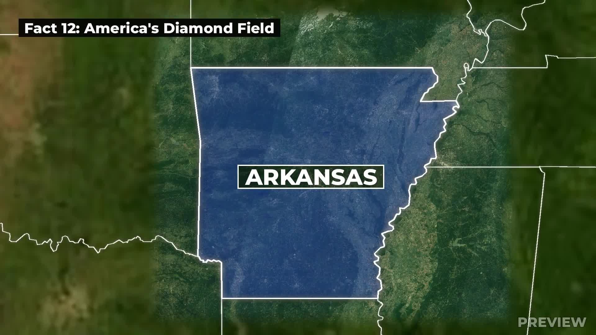
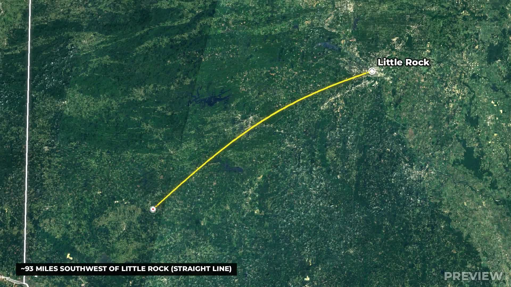
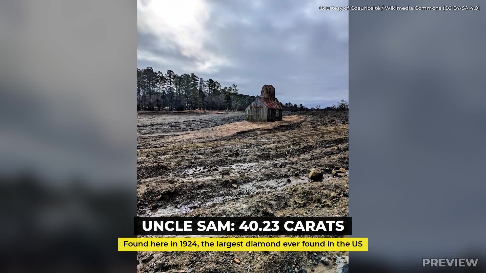

Map animation + pop-ups – 30 s geography sample (preview)
Story: the only public diamond field in the US – Crater of Diamonds State Park, Arkansas. Satellite zoom from the US to the state, state highlight, animated route with pins, red point-of-interest marker, fact title boxes, stat pop-ups and credited b-roll.
With narration & music (free local voice)
Alternative narration voice (ElevenLabs)
Original cut (no narration)



Sources & licences
- Satellite (close zoom): Sentinel-2 cloudless 2016 by EOX IT Services GmbH (contains modified Copernicus Sentinel data 2016), CC BY 4.0 – s2maps.eu
- Satellite (wide): NASA Blue Marble, July 2004 – NASA Earth Observatory (public domain)
- State borders: Natural Earth 1:10m admin-1 (public domain)
- Photos (Wikimedia Commons): “Crater of Diamonds State Park pano” by HAL333, CC BY-SA 4.0; “Crater of Diamonds mine, Arkansas” by Coeuriosité, CC BY-SA 4.0; “Crater diamond park employee taking photo of the diamond” by Coeuriosité, CC BY 4.0
- Facts: Wikipedia “Crater of Diamonds State Park” (37.5-acre field, keep-what-you-find, Uncle Sam 40.23 ct 1924, ~2 diamonds/day). Fonts: Montserrat (OFL). Sound: procedurally generated whooshes; narration by OmniVoice (k2-fsa, local) or ElevenLabs; background music generated with Meta MusicGen (local).